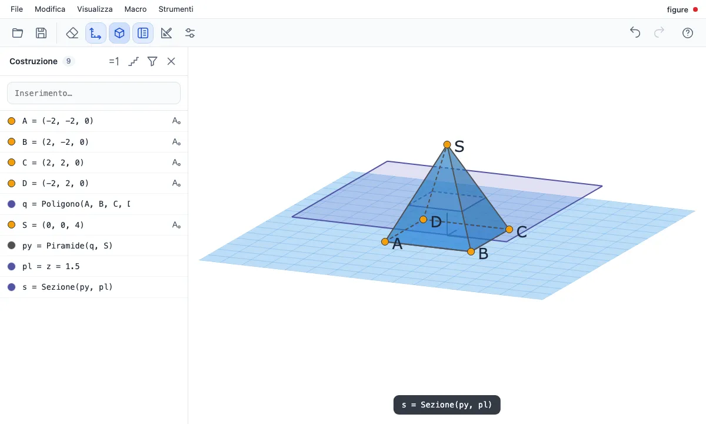

Il 3D

Passare al 3D
- Una nuova figura è piana. Vista 3D inclina la telecamera: il piano della figura diventa il pavimento z = 0, il sistema di riferimento un triedro. Una seconda pressione torna al piano, con il sistema di riferimento precedente.
-
Il ritorno al piano viene rifiutato finché un oggetto esce
dal piano z = 0; il suggerimento lo nomina.
Viceversa, una figura piana rifiuta qualsiasi oggetto dello
spazio (
A = (1, 2, 3), sfera…). - Ogni passaggio è un passo di annullamento.
- Le figure 3D di DGPad, con i punti liberi nel piano dello schermo, non hanno questo pulsante.
Vista
- Ruotare: tasto destro, o un dito in uno spazio vuoto. Spostare: tasto sinistro in uno spazio vuoto. Zoom: rotellina.
- Allargare due dita per ingrandire la figura e avvicinarle per ridurla. Trascinare entrambe le dita insieme per spostare la vista.
- P: prospettiva o proiezione parallela; S: pavimento. Le stesse impostazioni nella scheda Figura.
- Le parti nascoste (spigoli, circonferenze, rette sotto il pavimento o dietro una faccia) sono tratteggiate.
Costruire
-
Un clic in uno spazio vuoto crea un punto sul pavimento (con
la tavolozza aperta, con lo strumento Punto); da tastiera,
S = (0, 0, 4). - La tavolozza acquisisce le famiglie Piani e Solidi e due circonferenze; l’anello di un punto propone la sfera.
- Le simmetrie, rotazioni, omotetie e traslazioni trasformano anche un piano, una sfera o un poliedro (Trasformare un oggetto).
-
Ogni strumento che attende un piano accetta il
pavimento: viene creato un piano
z = 0nascosto, poi riutilizzato. -
Le formule leggono le tre coordinate:
d(A, B)è la distanza nello spazio.
| Oggetto | Comando |
|---|---|
| Piano |
Piano(A, B, C),
Piano(A, d),
PianoParallelo(A, p),
PianoOrtogonale(A, d),
p = x + y + z = 3
|
| Perpendicolare a un piano | Perpendicolare(A, p) |
| Sfera |
Sfera(O, A),
Sfera(O, r)
|
| Circonferenze |
Circonferenza(d, P) di asse d;
Circonferenza(O, r, d) ortogonale
alla retta d o parallela al piano d
|
| Solidi |
Cilindro(A, B, r),
Cono(A, B, r),
Cubo(A, B, C),
Tetraedro(A, B, C),
Ottaedro(A, B, C),
Dodecaedro(A, B, C),
Icosaedro(A, B, C),
Prisma(p, P),
Piramide(p, S)
|
| Sezione |
Sezione(s, p): circonferenza,
conica o poligono
|
| Sviluppo |
Sviluppo(c, f), f da 0 (piegato) a
1 (piatto)
|
| Intersezioni |
Intersezione(d, p) punto,
Intersezione(p, q) retta,
Intersezione(s, t) circonferenza di
due sfere,
Intersezione(d, s, n) punto (n = 1
o 2) di una retta e una sfera, un cilindro o un
cono
|
| Vertici |
Vertice(c, k), k a partire da 1
|
| Facce | Faccia(k, n), n a partire da 1 |
Solidi
- Facce: uno strumento che attende un piano o un poligono, o che colloca un punto, prende la faccia visibile sotto il puntatore (comandi). Lo strumento Intersezione accetta anche una retta e un piano o un poligono.
- Un solido è un unico oggetto: disegna facce e spigoli (tratteggiati dietro) e nasconde ciò che gli sta dietro. Si seleziona all’interno del suo contorno.
-
Cubo in due clic: due punti di uno stesso
piano o poligono danno
Cubo(A, B, p, ±1), dal lato rivolto verso la telecamera; due punti della stessa quota dannoCubo(A, B, 1), sopra (−1: sotto). Altrimenti lo strumento attende un terzo punto. Il cubo diventa indefinito se [AB] smette di essere parallelo al piano. Il tetraedro, l’ottaedro, il dodecaedro e l’icosaedro si costruiscono allo stesso modo. - Lo strumento Sezione prende il solido e il piano in qualsiasi ordine.
- Lo strumento Intersezione prende una retta e una sfera, un cilindro o un cono, in qualsiasi ordine: crea i due punti in cui la retta attraversa la superficie. Un clic vicino a uno di essi crea solo quello.
-
Uno slider come secondo argomento di
Sviluppoanima l’apertura:f = Cursore(0, 1, 0),n = Sviluppo(c, f). -
Superfici:
g(x, y) = …dà la superficie z = g(x, y) (inserimento), cheIntersezione(d, g, n)taglia con una retta.